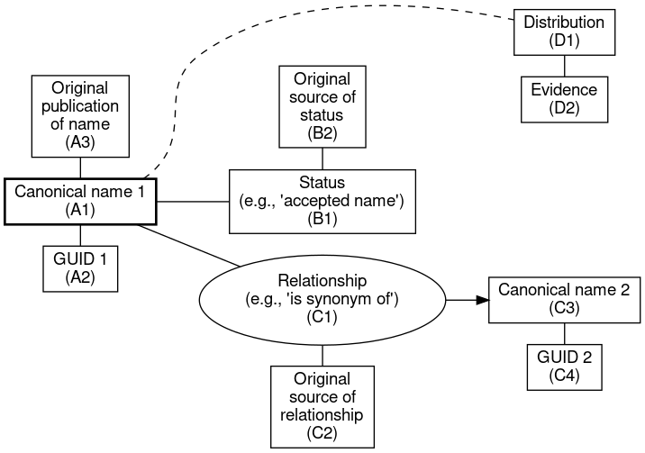
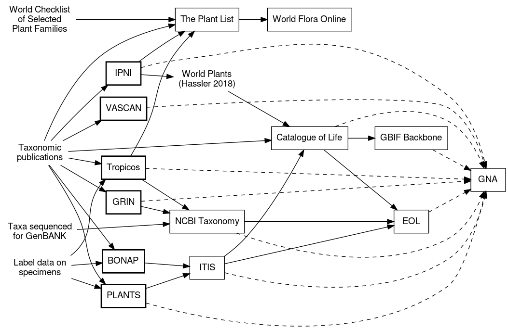

Names, names, names!
(In which I discuss issues with matching taxonomic names in different databases, and compare the universe of online name resources.)
Taxonomic names are, among other things, the identifiers, or labels, that traditionally link together data in different information resources; for example, from the publication that contains the original description of a species… to an ecological record of that species occurring at a site. Being vital informatics links, names have been called “key to the big new biology” and a wide array of online resources offer information structured around biological names (e.g., the Encyclopedia of Life and Wikispecies). Many sites also offer information about the names themselves, both as primary representations of taxonomic research and literature, and as aggregators and integrators of others’ lists (e.g., IPNI and The Plant List).
The eventual usefulness of our flora project will partially depend on how well we link to and integrate the data already in these online resources, especially the taxonomic ones. As we set out, it is thus important to step back and ask how we can best use these resources. Which should we focus on? (There are too many to attempt to integrate every one.) And how should we link to them? This blog post outlines the issues and how we intend to move forward with names.
Online resources for taxonomic names
I’ll start with online taxonomic name resources (including sites that are primarily checklists), before moving on to more general biological resources (which will also be integrated via names).
What name resources are out there?
These seem to be the major resources for plant names themselves, and relevant to our project (i.e., leaving out APNI):
- Biota of North America Program’s Taxonomic Data Center (BONAP’s TDC) The work of John T. Kartesz and assistants →
- Catalog of Life (CoL) A product of ITIS and the Species 2000 federation →
- GBIF Backbone Taxonomy (aka(?): GBIF’s Electronic Catalogue of Names of Known Organisms, ECAT) → and →
- Global Names Architecture (GNA) A major “meta-project” to link names in these other resources →
- GRIN-Global Taxonomy From the U.S. National Plant Germplasm System →
- International Plant Names Index (IPNI) Derived from the Index Kewensis project, the oldest name indexing project →
- Integrated Taxonomic Information System (ITIS) US Government shared names system →
- NCBI Taxonomy Collating and organizing names submitted to GENBANK →
- Pan Arctic Flora (PAF) Important source of names for the Alaska Flora →
- The Plant List Major attempt to gather all plant names, out of Kew →.
- PLANTS database, out of USDA →
- Tropicos from the Missouri Botanical Garden →
- Universal Biological Indexer and Organizer (uBio) Aggregating names since 2002, from MBL. Not sure if it is currently maintained; GNA seems to be its successor. There was also an associated resource from MBL called CU*STAR →
- Database of Vascular Plants of Canada (VASCAN) Comprehensive list of all vascular plants reported in Canada & Greenland. →
- World Flora Online (WFO) The successor to The Plant List. Data just coming online right now (Oct 2018) →
What’s in a “name resource”?
Before I compare the above resources, I’ll step back a bit and consider what a comprehensive, generic taxonomic name resource would consist of. A minimal list would be something like:
- Canonical spelling of name and author string.
- Citation for the original use of a name.
- Globally unique identifiers (GUIDs) for names. Because of problems with variations in spelling (see below), having a permanent, web-accessible identifier enables end-users to be sure they are talking about the same name entity and worry less about local variation in spelling. See this TDWG GUID statement.
- Statements about which names are currently accepted by taxonomists as the canonical label, and about synonymy, with references to the underlying opinions.
A graphical template for how these elements fit together might then look like this:

I’ve also added basic distribution data to the above graph. Our project is not yet attempting to integrating occurrences, but since we are working on a regional flora, it will be convenient to restrict the list of taxa to just those occurring in Alaska and nearby lands, and a number of online name resources offer presence or absence by geographical region (BONAP, USDA-PLANTS).
How do these various name resources compare?
I’ve divided the above name resources into two classes: 1) those primarily containing original online representations of names databases and/or primary taxonomic literature, and 2) aggregators that primarily integrate and re-serve data from the first class. This classification is imperfect, since many resources in class 2 also incorporate primary data (e.g., The Plant List, the Catalog of Life, uBIO, ?WFO), as well as involve manual checking of names, which is a form of primary data generation. This classification is only with reference to serving taxonomic names; “aggregators” for names may be primary sources for other data (e.g., distribution data in USDA PLANTS).
| Resource | GUIDs (A2, C4) | Orig. publ. (A3) | Status (B1, C1, C3) | Status ref. (B2, C2) | Distrib.(D1)/(D2) | API | Source desc. |
|---|---|---|---|---|---|---|---|
| 1. Primary data sources | |||||||
| BONAP→ | n | [1] | [3] | [1] | Y / [1] | [3] | Y |
| GRIN→ | Y | Y | Y | [1] | Y / [1] | n | Y |
| IPNI→ | Y | Y | n | n | n / n | Y | Y |
| PAF→ [5] | [2] | Y | Y | ~ | Y / ~ | n | Y |
| PLANTS→ | Y | [1] | Y | [1] | Y / [1] | [7] | n |
| Tropicos→ | Y | Y | Y | Y | Y / Y | Y | n [6] |
| VASCAN→ | [2] | n | Y | Y | Y / n | Y | Y |
| 2. Aggregators | |||||||
| COL→ | Y | Y | Y | n | n / n | n | Y |
| GBIF→ | Y | [4] | [4] | [4] | Y / Y | Y | Y: 1 2 |
| GNA→ | Y | n | n | n | n / n | Y | ~ |
| ITIS→ | Y | n | Y | Y | n / n | Y | Y |
| NCBI→ | Y | n | n | n | n / n | Y | Y |
| The Plant List→ | Y | Y | Y | n | n / n | [7] | Y |
| uBio→ | Y | n | Y | n | n / n | Y | Y |
| WFO→ | Y | Y | Y | n | n / n | n | n |
Data flow
In deciding which taxonomic data to incorporate and how to use available GUIDs, it’s necessary to understand the flow of primary taxonomic data through the aggregators. Here’s a sketch of my current understanding of how these data flow, developed via reading i) the “How we made this” pages for each resource, and ii) the reference section for names in that resource. As with the rest of this blog post, I may have missed resources or misinterpreted what I read on the websites, and I invite you to please correct me with a comment below!

Other resources linked by taxonomic names
Besides online resources primarily focused on taxonomic names and their synonyms, there are of course many biological databases that might be integrated via taxonomic names. The resources we are already committed to drawing upon are:
- The Flora of North America project (FNA): an almost complete revision of all plant taxa in the USA (more info here).
- The ARCTOS museum management database: containing metadata for all the ALA herbarium sheets.
- iNaturalist, an outstanding repository of biological observations backed by images.
Orthography and fuzzy matching
Linking among databases would not be a difficult problem if the characters of a name (e.g., Antennaria alpina var. media (Greene) Jeps.) never varied. But these strings are prone to copying (typing) errors and other orthographic variation, e.g., in abbreviating and punctuating the author string. An author like “Jo Bloggs”, might appear as Bloggs, Blog., J. Bloggs or J.Bloggs, despite official recommendations. I just learned that IPNI has a policy of removing spaces after periods, which differs from policies elsewhere, and from the natural inclination of many people. (FYI: this Wikipedia article on author citations in botanical names is super, and one I frequently revisit.)
Short of comparing every pair of names by hand, some sort of computational tool is need to determine if a name in database A is the same as in database B. Much thought has gone into this problem (e.g., Boyle et al. 2013, Rees 2014, Horn 2016, Patterson et al. 2016). Solutions can involve both ‘fuzzy matching’ (finding a match when not all members of a string are identical, similar to BLASTing nucleotides), and the applications of rules (such as checking against a list of author abbreviations).
For locally matching a name to a list I’ve been using a home-cooked approach (I’ll post the code in in a subsequent blog):
- Check first for an exact match,
- Check for a punctuation mismatch, by matching a simplified version of each name, made by:
- converting
andto& - deleting spaces
- deleting periods
- collapsing non-ASCII characters to the corresponding ASCII character (e.g.,
ÅtoA) - converting to lowercase,
- converting
- Checking for missing/different characters using
agrep(approximategrep) from the TRE library.
However, for matching to existing external lists (i.e., online databases) more capable solutions exist:
- The Taxonomic Name Resolution Service (TNRS), which matches a given name to Tropicos, PLANTS, NCBI and the Plantlist.
- The Global Names Resolver (GNR), which (as of 2018-10-31) matches to 182 sources, including all in the table above (except the Plantlist and FNA), plus iNaturalist. The API returns the original GUID in each source dataset, with information about the nature of the match (exact, fuzzy, fuzzy on species part, etc.). As its creators intended, GNR is an invaluable resource for knitting together datasets by taxonomic name, and we will use it extensively! Prior to a centralized service like GNR, to get the same comprehensiveness one would have needed to do a
(n*n-1)/2local comparison of every downloaded name list with every other one.
Work plan for using these data
Now to work! As I see it now, there are three intertwined elements of our reconciliation processes:
- Assembling a rough list from our various “local” sources. This combined list will be that from which accepted names will eventually be chosen by the Flora of Alaska taxonomists. I’ll use use the “home-cooked” method above to reconcile these lists against each other. The local sources are:
- The existing ALA Alaskan Plant Checklist (~4,000 names), developed by Dave Murray and colleagues at ALA over the past ~30 years,
- The checklist developed by botanists at the Alaska Center for Conservation Science, managed by Timm Nawrocki (~11,700 names, combining the ALA checklist with other data),
- The scanned, OCR version of Hultén’s Flora of Alaska.
- Fixing “bad” names in our local list, by reconciling with a limited, “canonical” set of external sources. We could just go with IPNI, but unfortunately before 1971 infraspecific names were not included in Index Kewensis. So other name resources will be needed. Some ranking of external resources is also necessary in order to decide which variation in name should be accepted in the case of differing opinions. In theory, all primary resources should have gone back to the original publication and copied the name string from there, but no doubt there will be differences. Our current ranking is: IPNI > Tropicos > VASCAN > PLANTS > maybe BONAP (if needed). GNR can be used for these reconciliations (except for BONAP).
- Linking out to resources from those corrected names (the Plantlist will be important for this).
Clear as mud? Let’s see how it goes…
(Phew! This blog is definitely TLDR. I’ll try to keep it shorter next time.)